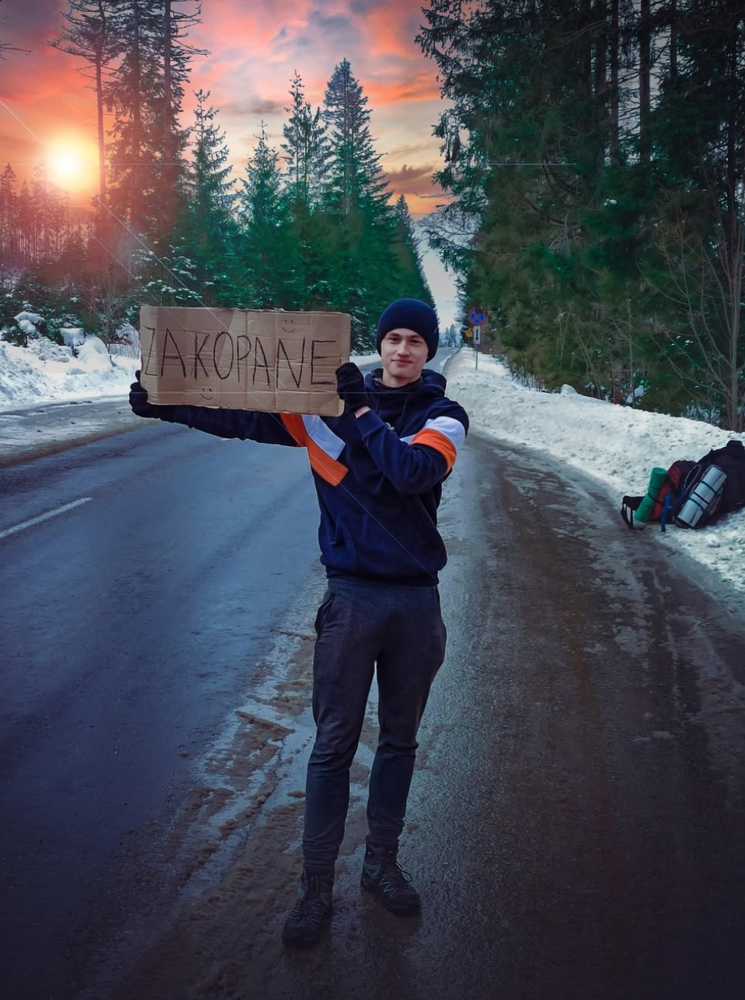

Firefighting
I am completing my firefighter training and take part in unit activities, including drills and competitions.
About
My career focus is software engineering and backend development. I work as a Junior Automotive Software Engineer at Samsung R&D Institute and am a final-year Computer Science student at PJAIT. I build Python software, CI/CD pipelines, and tools that automate developers’ workflows.
At Samsung, I work in a team and am responsible for test automation, Jenkins, pipelines, and the test dashboard. At Sorno, I developed the backend of a system used by several thousand users across multiple schools. I am interested in the full workflow, from data and APIs to automated task execution and a clear result for the user.
My personal projects explore computer vision and geospatial processing. My posture-analysis prototype is at the body-detection and RGB-D analysis development stage. It lets me combine programming with geometry and hardware experiments. I also want to develop academically and am considering a doctorate.
Outside Computer Science, I am interested in physics, mathematics, and engineering. I have sailed since I was 13, am learning to fly gliders, and play guitar in a band. I enjoy learning through practice, whether working with a new device, sailing, or hiking in the mountains.

I am completing my firefighter training and take part in unit activities, including drills and competitions.
I ride recreationally, mainly for enjoyment and a break from everyday life.
I am learning to fly gliders. Alongside practical training, I am studying the theory of flight and glider preparation.
I have been sailing since I was 13. I am a qualified offshore yacht skipper and feel most at home at sea. The farther north, the better.
I play guitar in a band; we rehearse regularly and perform on various occasions. I am also currently learning piano and singing.
I play chess. I used to compete in tournaments; today I play mainly for my own enjoyment.
I enjoy longer trips into the mountains, especially when I can leave the city behind for a few days. I return most often to the Tatra Mountains, which I visit several times a year, but I also climb abroad and in other Polish mountain ranges.
I have hitchhiked more than 10,000 km across Europe and beyond. I value this way of traveling for its freedom and the chance to experience places from a less obvious perspective.